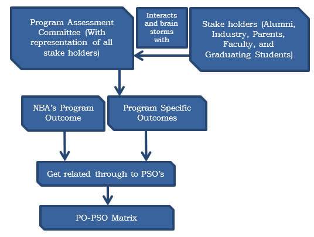

Outcome-based Education (OBE) emphasizes on many components in terms of student achievement in
a program. The most important components are the Program Outcomes (POs), Program Educational
A knowledge-based society characterized by a scientific outlook and a culture of cooperation is the long-term goal of the Poornima Institute of Engineering & Technology, Jaipur. The institute's mission is to educate students for success in an increasingly globalized economy by providing them with a balanced education. Course Outcomes (COs) are defined for each course using Bloom's Taxonomy by each course coordinator and are approved Department Advisory Board. The Program Outcomes are in line with Washington Accord & NBA guidelines, catering to Graduate Attributed. All the CO’s and mapped with Program Outcomes (POs) and Program Specific Outcomes (PSOs) for further attainment analysis. The attainment of CO’s, PSO & PO’s in a academic year become benchmarks for Next academic session, for bridging the gap in Quality teaching pedagogy, Faculty Quality, Ambience of Institutions, Innovative practices in Teaching methodology including ICT techniques, enrichment of co-curricular & beyond curricular activities and improvement in curriculum. All of the undergraduate degree programs at the institution use this instructional strategy.
OBE Framework
Identify & define the learning outcomes at all levels and explicitly document the same in the curriculum.
Organizing the teaching and learning activity through student – centered activity and project base learning.
Assessment and evaluation at all levels of learning outcomes i.e. PSOs , POs and COs
Formulation PO’s and PSO’s:
Program Outcomes (POs): » Program outcomes are statements that describe what students are expected to know and be able to do upon graduating from the program. » These are associated with the information, attitude, and conduct that students take away from the four-year curriculum, as well as their analytical abilities, knowledge, and skills. The POs basically show what the students can accomplish with the information they get from the curriculum. Therefore, POs characterize the characteristics of an engineering graduate's professional life. The following twelve points of view (POs) are relevant to all engineering curricula and were developed by the NBA for engineering graduates.
Program Specific Outcomes (PSOs): » Program Specific Outcomes means what the graduate students of a specific degree program should be able to do and Course Outcomes are the resultant knowledge skills that the students acquire at the end of the course. PSOs are built on three behavioral components: knowledge, skill, and attitude. PSOs are statements made by the institute to stakeholders (employers, students, etc.) that should be measurable, appropriate, realistic, and achievable. They describe the career and professional accomplishments that the program is preparing graduates to accomplish after 4 years of graduation.
Objective of Outcome based Education reflection

Process of defining PSO’s of the Department
The process of refinement of POs
Process for Defining PSOs
The program Assessment committee along with the stake holders define the program specific outcomes after having a brain storming session with the stake holders.
Process for Defining PSOs
PROCESS FOR DEFINING THE VISION AND MISSION OF THE DEPARTMENT
The Institute has been established in the year 2007 with the vision to create knowledge based society and to become valuable resource for enriching mankind. The Department of Computer Engineering has been incepted in same year with the objective to create an environment to produce competent technocrats and innovators. The Department level Committee has executed SWOT analysis on performance of the first Batch of BTech(CS) graduated in the year 2011, according to the objectives and presented report to governing council. Seventh meeting of The Governing Council of the institute was conducted on 9th September 2011. With reference to swot Analysis presented in the meeting, it was proposed by the Chairman to define the department’s Vision, Mission and Program Educational Objectives (PEOs) in line to the Vision, Mission of the institute. The Program Accreditation Assessment Committee (PAAC) has been formed on principle’s notice to develop and establish Vision, Mission and Program Education objectives of the department and program respectively. The PAAC consists of Head of the Department, senior faculty members, employers, parents and alumni. The meeting of PAAC was conducted on 11th November, 2011 to define Vision, Mission and PEOs. In this meeting inputs and views were taken from all Committee members. The first draft was sent to Quality Improvement Committee (QIC) for approval. QIC conducted survey and took advices and comments from all internal and External stakeholders and then QIC suggested some amendments based on the inputs, feedbacks, surveys and experiences of all stakeholders. In the next meeting of PAAC vision, mission and PEOs are corrected and finalized by QIC.After getting improvement and suggestions received from QIC, the second meeting of PAAC was organized to finalize the vision, mission and PEOs after incorporating suggestions made by QIC. The Vision, Mission and PEOs were presented to Governing Council for approval. The mission statements are reviewed on yearly basis by the PAAC so that latest trends and scenarios can be adopted in the field of Computer Engineering.
PROCESS FOR DEFINING THE VISION AND MISSION OF THE DEPARTMENT
Program Education objectives are designed in line of Department vision and mission. The draft was framed during the interactions between Academician, industry professionals, Students, Industry employers, Management, Professional societies and Alumni at various platforms. Data required for the same is collected and compiled by Program Accreditation and Assessment Committee (PAAC). The feedback, suggestions and advices from committee members were compiled, consolidated and presented in the form of draft to QIC for review. QIC conducted survey and took advices and comments from all internal and External stakeholders and then QIC suggested some amendments based on the inputs, feedbacks, surveys and experiences of all stakeholders. After getting reviews, suggestions were incorporated in Program education objectives. PEOs were published and disseminated after approval from Governing Council.
Stages to finalize the PEOs
Stage 1: Information collection and compilation
The feedback, suggestions and advices that are evolved during the interactions between Faculty-industry professionals, Students, Industry employers, Management, Department, Professional societies and Alumni at various platforms are collected and compiled.
Stage 2: Information Examination
The Program Accreditation Assessment Committee (PAAC) analyzed the collected data during its meetings. Reviewed proposal was sent to QIC for the approval.
Stage 3: Defining PEOs
Based on the analysis of the data, the PEO statements were framed. Based on the suggestions made by QIC, Program Education objectives revised according to the needs of students and department.
Stage 4: Establishing PEOs
A meeting was conducted with all the stake holders of the program to establish the Program Educational Objectives of the department. After finalizing program education objectives, they were published and disseminated among all the stakeholders through various medium.
Establish consistency of PEOs with Mission of the Department
To establish consistency between Program Education Objectives (PEOs) and Mission statements various interactions were organized among internal and external stakeholders. Program Accreditation and Assessment Committee (PAAC) has framed Vision, Mission and Program Educational Objectives after consulting with all committee members. Program Education Objectives were aligned with Vision, Mission od the Department and Program Outcomes (POs). The following measures were used to improve consistency between Mission and program Education Objective.
Interaction between Teachers and Industry Professionals assisted in knowing latest technologies and understanding current industry requirements to align Mission with PEOs.
Summer Internship Programs, Campus Connect program by
Infosys and Industry Institute interaction helped to be up-to the logical needs.
The up gradation of Curriculum, Inclusion of Internship program and by affiliated Rajasthan Technical University enriched program effectiveness.
Workshops, Faculty Trainings , Special Lectures by Industry resource persons gave exposure and insights on the current trends and future developments.
Professional Societies helped to shared knowledge and exchanged ideas on the emerging sectors.
A periodical interaction between the following is arranged:
Faculty-industry professionals,
Students-Employers,
Industry resource person-Students-Faculty
Alumni- Existing graduate students-Faculty
The PEOs are correlated to the Department mission in a number of ways and with varying degrees of applicability. These relations are explained below
PEO's
Mission of the Department
PEO1: Core Competence
To understand, analyze design and develop the technical specification
To provide engineering solution of research oriented problem
To create products for the society in the field of computer engineering.
M1:-To Develop Competent Engineer
M2:-To Improve Design and Execution skill
M3:-To Develop socially responsible Technical Expert
M4:-To Contribute to the research and Discovery
PEO2: Cognitive Intelligence
To lead the upcoming generation towards creation and innovation
To use emerging cutting-edge technology with effective communication skills and leadership quality.
M4:-To Contribute to the research and Discovery
M3:-To Develop socially responsible Technical Expert
PEO3:Professional Skills
To work efficiently as competent engineer
To become ethical and responsible towards themselves, team members, society and the nation.